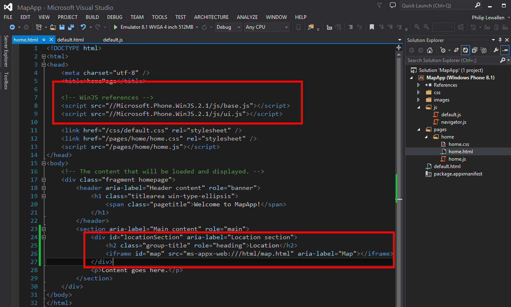
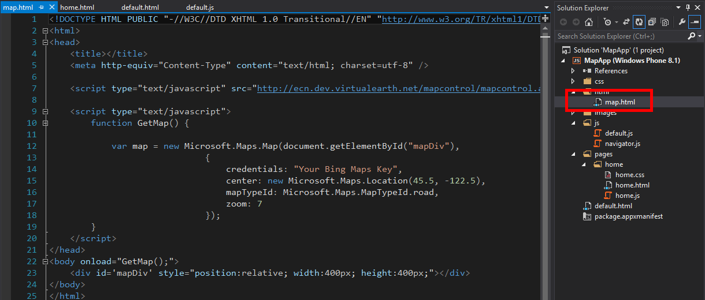
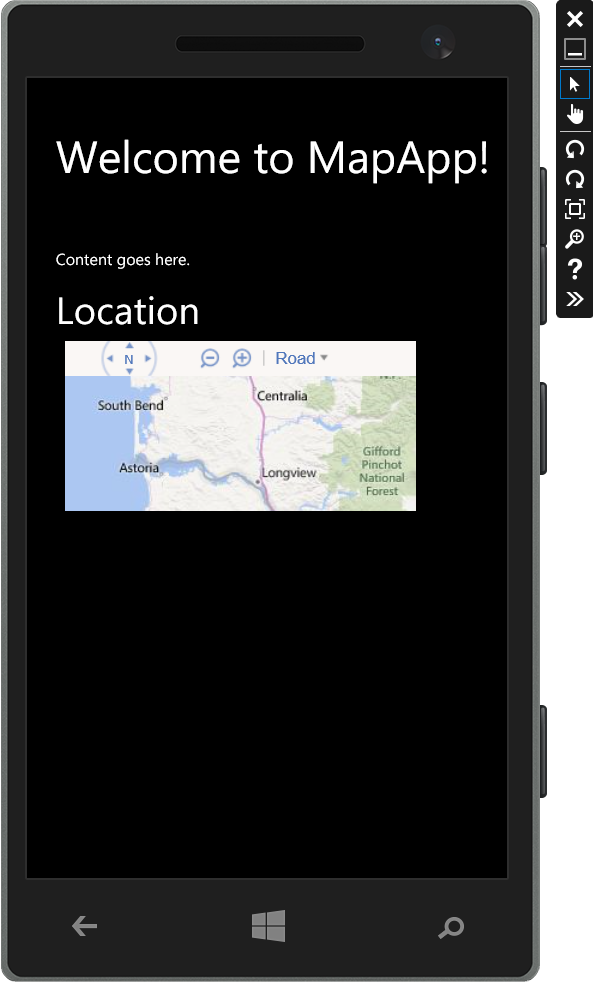

The answer is to put the map into its own page and host it in a Windows phone iframe.
In the image below the map constructor has been taken out and the code from the Windows Phone Navigation tempalte has been put back in. Notice in the home.html file we have the references to the Microsft.Phone.WinJS.2.1libraries. I have not been able to confirm it but it is these libraries which are a factor in the difficulty of converting an app made for a tablet or desktop to the phone. This is why I am going into such detail to ensure the gap in documentation can be bridged.
In the second red rectangle on the between 24 and 27 we have inserted the code for the iframe. I recommend keeping this code the same for each iframe I use in the project.
In this code block do pay attention to the syntax used by Microsoft in the iframe src path. Notice how there is a prefix in the src of ms-appx-web:///. This is how Microsoft has ben JavaScript to do it's bidding in the Windows Phone. As you might have guessed the three /// is how Microsoft says this is a windows phone page and not a regular html page.
So next we are going to make a new folder at the root of the project and call it html. I have used this file folder as habbit to put most of iframe content in it. I do this more out of habbit now and a desire not to change the code in my copy and pasted iframe div as little as possible.
Moving the files around won't cause an issues, as far as I know, but I simply do it to change as little code as possbile and then for consistency. Now that we have an iframe referencing our map.html file we can copy and paste the code from the Microsoft AJAX API directly into the file and viola! It works. This code is also on the previous page near the bottom(Step Three) so I will not include it again.
Yes it is small and this is dictated by the normal rules of CSS and HTML and the inheretence of certain objects and their properties. It is not as simple as it would be in a straight web page as there are just more CSS Features added by Microsoft to fit into their different templates such as the Pivt template. We will resize the map and and deal with panning of the map in the next step. But the important part is we do have a fully functioning Bing map with our credentials which can be zoomed in and out of and panned around.
